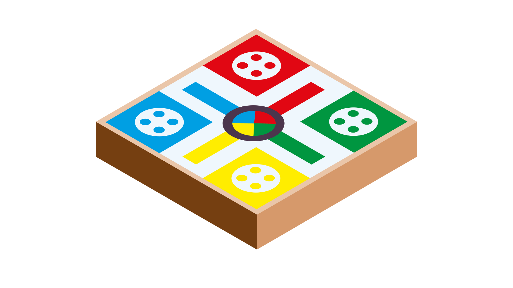

Chapitre 1 : Les Problèmes de Décision de Markov (PDM)#
Une partie de Ludo pour commencer#
Imaginons une partie de Ludo. À chaque tour, vous lancez un dé. Le résultat obtenu vous offre plusieurs options (ou actions) :
Sortir un nouveau pion si vous faites un
6;Avancer un pion déjà en jeu ;
Capturer le pion d’un adversaire.
Pour décider du meilleur coup, vous observez la disposition des pions sur le plateau, c’est-à-dire l’état actuel du jeu. Le but n’est pas seulement de choisir le coup qui vous fait avancer le plus vite maintenant, mais celui qui maximise vos chances de gagner sur le long terme. Chaque action modifie la configuration du jeu, le faisant passer à un nouvel état (disposition des pions sur le plateau).
{kind=link}

Comme vous pouvez le voir, jouer au Ludo implique une suite de décisions dont les conséquences se mesurent à la fois immédiatement et sur la durée de la partie. Formellement, on parle de problème de prise de décision séquentielle. Pour être plus précis, il s’agit d’un problème de décision dans un environnement incertain, car vous ne contrôlez ni le résultat du dé, ni les actions de vos adversaires.
L’Apprentissage par Renforcement à la rescousse#
C’est exactement ce type de problème que l’apprentissage par renforcement (RL) cherche à résoudre. L’objectif est qu’un agent (ici, le joueur de Ludo) apprenne une stratégie ou politique, c’est-à-dire une manière de se comporter, pour atteindre son but (gagner la partie).
Pour modéliser formellement ce genre de situation, le RL s’appuie sur un outil mathématique fondamental : les Processus Décisionnels de Markov, ou Markov Decision Processes (MDPs) en anglais.
Dans ce chapitre, nous allons détailler les composantes d’un PDM en nous aidant d’un jeu plus simple : le “21 avec un dé”.
Tip
Pour bien saisir les concepts qui suivront, nous vous invitons à tester le jeu dès maintenant.
Les Problèmes de Décision de Markov (PDM) : 4 Pilliers#
Application pratique#
Pour illustrer ce concept, j’ai développé une petite application web.
➡️ Lancer l’application du Jeu du Dé
(N’oubliez pas de lancer le serveur app.py dans un terminal pour que le lien fonctionne !)